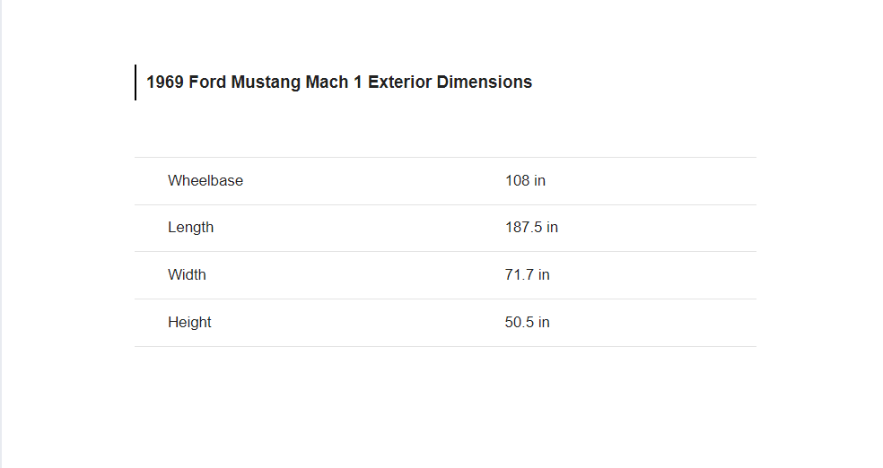
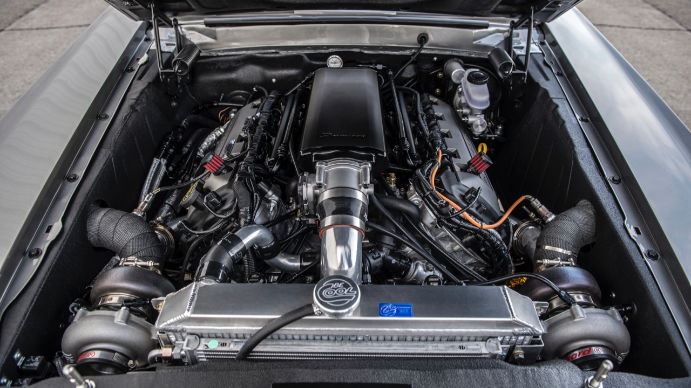
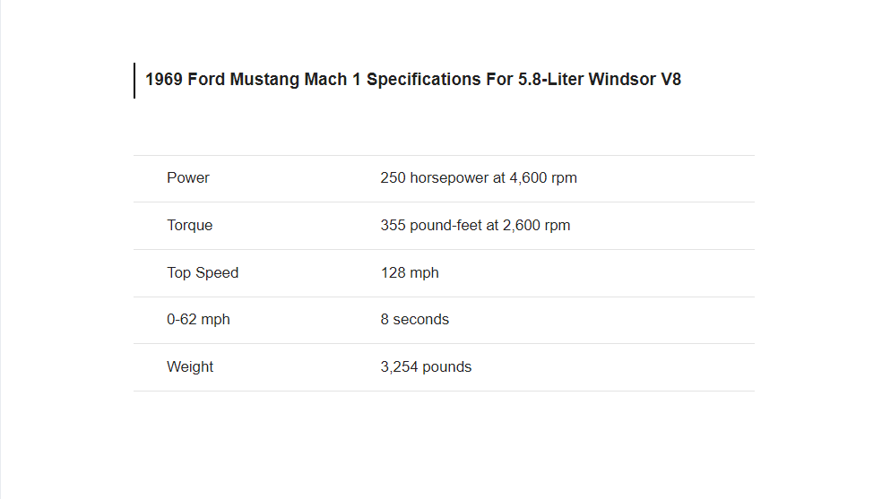

Discription:
The Ford Mustang Mach 1 is a performance-oriented option package[1] of the Ford Mustang muscle car, originally introduced in August 1968 for the 1969 model year. It was available until 1978, returned briefly in 2003, 2004, and most recently 2021.

Specification
| 1969 Ford Mustang Mach 1 Exteriot Dimensions
The 1969 evolution of the Mustang shows the emerging trend at the time of increasing the size of what were once rather compact coupes.

| 1969 Ford Mustang Mach 1 Interior
The interior of the Mach 1 is packed with amenities as if to congratulate you on your choice of a higher-trim model.
| 1969 Ford Mustang Mach 1 Specifications For 5.8-Liter Windsor V8

In its most brutal setup, with a Cobra Jet V8 under the hood, the Mach 1 reached 62 mph in under 6 seconds and did the standing quarter-mile in just 14 seconds with a gate speed of 103 mph.

Price
$40,000
You can find a neat ’69 example with a smaller engine for as little as $40,000, but prices tend to go up, and you need to look out for Mustangs with added Mach 1 parts that aren’t real Mach 1s